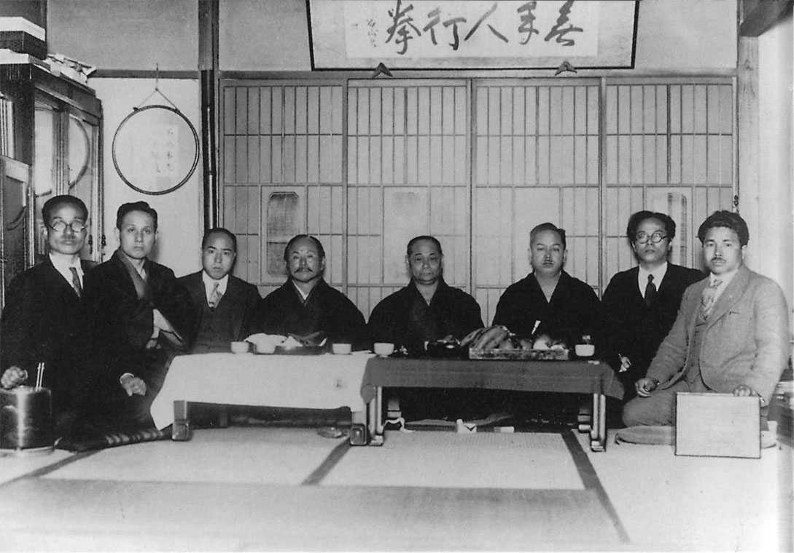
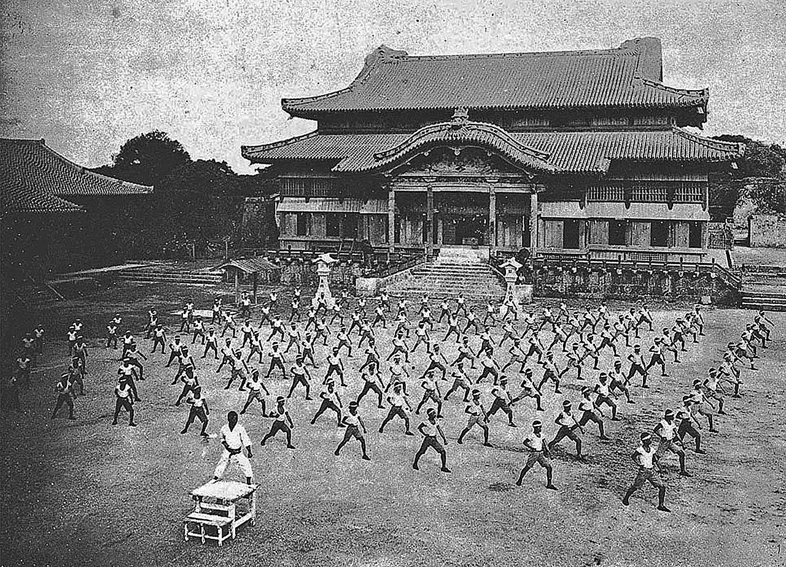

Home |
Karate |
Muai Thai |
Box
|
Grappling |
Почитать об этом всём на внешнем ресурсе
Karete =>
Cтили
Весовые категории
Masters of karate in Tokyo (c.1930s)

Karate training in front of Shuri Castle in Naha (1938)

в начало
Виды ударов кулаками (Чок)
Сито-рю (糸東流), основатель Кэнва Мабуни
Годзю-рю (剛柔流), основатель Тёдзюн Мияги;
Вадо-рю (和道流), основатель Хиронори Оцука;
cоздан в 1939 году
Сётокан (松涛館), основатель Гитин Фунакоси;
Весовые категории согласно международной федерации
от 45.5 до 47.7 Mini Flyweight
от 47.7 до 49.0 Light Flyweight
от 49.0 до 50.8 Flyweight
от 50.8 до 52.2 Super Flyweight
от 52.2 до 53.5 Bantamweight
от 53.5 до 55.3 Super Bantamweight
от 55.3 до 57.2 Featherweight
 |
Grappling |
Почитать об этом всём на внешнем ресурсе
|
Grappling |
Почитать об этом всём на внешнем ресурсе